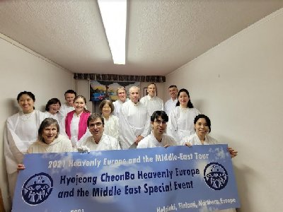

2021
3 Heliga dagar firas på dagen för Sanna föräldrars Välsignelse 27 april 2021. • 61-årsjubiléet av Sanna föräldrars heliga bröllop (ursprungligt datum 16 mars 1960 månkalendern) • 54:e himmelska föräldradagen (ursprungligt 1 januari 1968 solkalender) • 62:a Sanna föräldrars dag (ursprungligt datum 1 mars 1960 månkalendern)
Världen:
Stormning av USA:s kongress i Kapitolium ägde rum den 6 januari 2021 i Washington, D.C., när anhängare till
den då sittande amerikanske presidenten Donald Trump stormade den amerikanska kongressbyggnaden. 5
döda!
Upploppet skedde samtidigt som kongressen satt i gemensam session och sammanställde delstaternas
elektorsröster för att officiellt och ceremoniellt utse Joe Biden
som segrare i presidentvalet i USA 2020.
jan 2021 Svensk TV visar en dokumentär (43 min) om Sveriges deltagande i Koreakriget 1950-53, med ett svenskt
miltärsjukhus.
Sjukhuset överlämnades till det koreanska samhället 1957.
Titel: Svenskarna i Koreakriget
Dokumentär om det svenska fältsjukhuset i Busan under Koreakriget. En insats som kom att bli Sveriges genom
tiderna största humanitära insats för ett land i krig. Med hjälp av både svenska och utländska Koreaveteraner
berättas en gripande och fascinerande historia som få svenskar känner till.
13-14 febr Europeiskt Matching/Blessing preparation WS hålls via zoom.
Inspelning av pastor Yongs Morning devotion från USA
Episode 1-114 ...
Ep 29-36 The Perfection of Gods Lineage
27 febr 5th Rally of Hope Korea - on zoom internet
9 april prins Philip i England avlider 99 år gammal. Make till Englands drottning Elizabeth II.
28 febr Rally of Hope
Världen: Suezkanalen blockerad i 1 vecka
Den 23 mars 2021 grundstötte containerfartyget M/V Ever Given (400m långt), med två kanallotsar och en
indisk besättning på 23 personer, i den 193 kilometer långa och på vissa sträckor omkring 200 meter breda
Suezkanalen.
Fartyget var då på väg från Tanjung Pelepas hamn i Malaysia till Rotterdam. Vid grundståtningen vreds
fartyget sidledes och blockerade kanalen (1 vecka) på grund av hörd sidvind i en sandstorm. Vindstyrkan har
beräknats att ha uppgått till uppåt 20,5 meter per sekund i byarna.
24 april Hyo Jin Cosmic Blessing! Många matchade par deltog och hade gjort enorma ansträngningar för att
förbereda sig för Välsignelsen. Vi är glada över att kunna fira deras välsignelse tillsammans och som en
världsomspånnande rörelse.
länk
1-2 maj 2021 Hyojeong CheonBo Great Works Celebrating True Parents' Holy Wedding Anniversary.
Rally of Hope
5 juni Sanna mor talar i USA.
18 juni 5,5 timmars zoom-möte med vittnesbörd för pastorer från hela världen.
10 oktober 5400 nya CheonBo-par invigda via websåndning från Korea.
4 nov Vi firar 800:e Ahn Shi Il i Sverige.

13 nov 2021 Ancestor liberation and Blessing på många platser runt Europa, lett från Cheong Pyeong Korea.
6 dec 2021 1st Prayer Rally for the Salvation of the Homeland
dec 2021 Cheon Shim Won Special Prayer Room Korea, introducerat med lokala i varje land.

Detailed instructions
from Present Balcomb regarding the Cheongshim Won Special prayer Room.